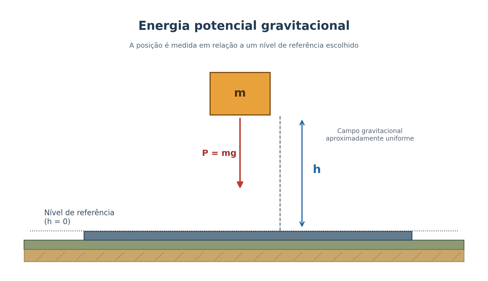
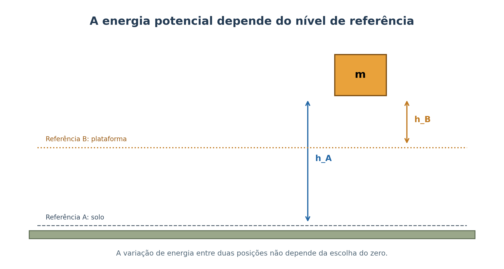
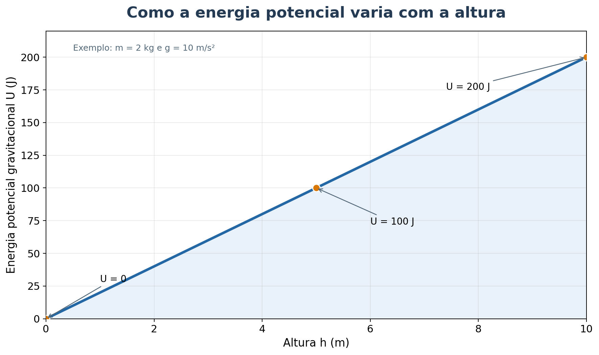

A energia potencial gravitacional está associada à posição de um corpo em um campo gravitacional. Próximo à superfície da Terra, quando podemos considerar a aceleração da gravidade constante, ela é dada por $E_{pg}=mgh$, em que $m$ é a massa, $g$ é a aceleração gravitacional e $h$ é a altura em relação a um nível de referência.
A energia potencial depende do nível escolhido como referência, mas sua variação entre duas posições não depende dessa escolha. O trabalho realizado pela força peso é igual ao oposto da variação da energia potencial: $W_{peso}=-\Delta E_{pg}$.
📖 Energia potencial gravitacional
1. Conceito e origem física
Quando um objeto é elevado, é necessário realizar trabalho contra a força gravitacional. Depois de elevado, o objeto pode realizar trabalho ao descer, como ocorre com a água armazenada em uma represa ou com uma carga suspensa por um guindaste. A energia associada à configuração do sistema corpo-Terra é chamada de energia potencial gravitacional.
Essa energia está relacionada à posição do corpo em um campo gravitacional e deve ser definida em relação a um nível de referência. Não é correto atribuir um valor absoluto único à energia potencial sem informar esse referencial.

Figura 1: Um corpo de massa m está a uma altura h acima do nível de referência. A força peso aponta para baixo. Representação esquemática, sem escala.
2. Expressão matemática nas proximidades da superfície terrestre
Em uma região próxima à superfície da Terra, na qual a variação de $g$ pode ser desprezada, a energia potencial gravitacional é calculada por:
$$E_{pg}=mgh$$
Em que $m$ é a massa do corpo, em quilogramas (kg); $g$ é o módulo da aceleração da gravidade, em metros por segundo ao quadrado (m/s²); e $h$ é a altura em relação ao nível de referência, em metros (m). A energia é expressa em joules (J):
Em muitos exercícios, adota-se $g=10\,\text{m/s}^2$ como aproximação. Se o enunciado fornecer outro valor, deve-se utilizar o valor informado.
3. O nível de referência e o sinal da energia
O nível de referência é a posição escolhida para atribuir altura nula ($h=0$) e, consequentemente, energia potencial gravitacional nula. Pode ser o solo, o piso de um andar, uma mesa ou qualquer plano conveniente.
Se o corpo estiver acima desse nível, $h$ será positivo; se estiver abaixo, $h$ será negativo. Assim, a energia potencial pode ser positiva, nula ou negativa. O sinal depende da escolha do referencial e não indica, por si só, uma condição física melhor ou pior.

Figura 2: A mudança do nível de referência altera o valor atribuído à energia potencial, mas não altera a diferença de energia entre duas posições.
📖 Variação da energia potencial gravitacional
4. Variação entre duas posições
Quando um corpo passa de uma altura inicial $h_i$ para uma altura final $h_f$, sua variação de energia potencial gravitacional é:
$$\Delta E_{pg}=E_{pg,f}-E_{pg,i}=mg(h_f-h_i)$$
Para massa e gravidade constantes:
Na subida, $h_f>h_i$ e $\Delta E_{pg}>0$: a energia potencial aumenta.
Na descida, $h_f<h_i$ e $\Delta E_{pg}<0$: a energia potencial diminui.
Se as alturas inicial e final forem iguais, $\Delta E_{pg}=0$.
Observe que a variação depende somente das alturas inicial e final. O caminho percorrido entre essas posições não altera a variação da energia potencial gravitacional.
5. Relação com o trabalho da força peso
A força peso é conservativa. Por isso, o trabalho realizado por ela é igual ao oposto da variação da energia potencial gravitacional:
$$W_{peso}=-\Delta E_{pg}$$
Na descida, o peso realiza trabalho positivo e a energia potencial diminui. Na subida, o peso realiza trabalho negativo e a energia potencial aumenta. Essa relação refere-se ao trabalho da força peso; outras forças podem também realizar trabalho sobre o corpo.
📖 Interpretação gráfica e aplicações
6. Energia potencial em função da altura
Para uma massa constante em um local onde $g$ é constante, a expressão $E_{pg}=mgh$ mostra que a energia potencial é diretamente proporcional à altura. O gráfico é uma reta que passa pela origem quando o nível de referência escolhido corresponde a $h=0$.

Figura 3: Para $m=2\,\text{kg}$ e $g=10\,\text{m/s}^2$, a relação é $E_{pg}=20h$, com energia em joules e altura em metros.
7. Aplicações no cotidiano e na tecnologia
Usinas hidrelétricas: a água armazenada em níveis elevados possui energia potencial que pode ser convertida em energia cinética e, posteriormente, em energia elétrica.
Guindastes: ao elevar uma carga, aumenta-se sua energia potencial gravitacional em relação ao nível de referência.
Montanhas-russas: durante a descida, parte da energia potencial gravitacional pode ser transformada em energia cinética.
8. Limites de validade da expressão $mgh$
A expressão $E_{pg}=mgh$ é uma aproximação adequada quando a região analisada é pequena em comparação com o raio do astro e a aceleração gravitacional pode ser considerada constante. Em situações envolvendo grandes distâncias ao centro da Terra, como órbitas de satélites, a variação de $g$ precisa ser considerada e utiliza-se uma expressão mais geral para a interação gravitacional.
9. Atenção às unidades e aos conceitos
Utilize a massa em quilogramas, a altura em metros e $g$ em m/s².
Não confunda massa (kg) com peso (N).
Informe sempre o nível de referência ao apresentar um valor de energia potencial.
Não confunda energia potencial em uma posição com sua variação entre duas posições.
O trabalho da força peso tem sinal oposto ao da variação da energia potencial.
💡 Física em Ação
Reservatórios e hidrelétricas
A água armazenada em um reservatório elevado possui energia potencial gravitacional. Ao escoar para níveis mais baixos, pode movimentar turbinas conectadas a geradores elétricos.
Guindastes e elevadores
Ao elevar uma carga, o equipamento aumenta a energia potencial gravitacional do sistema em relação ao nível de referência. A variação depende da massa, da gravidade local e da diferença de altura.
✅ 5 Questões Resolvidas (R 1 a 5)
R 1: Energia potencial em relação ao solo
Enunciado: Um vaso de massa $3{,}0\text{ kg}$ está em uma varanda a $4{,}0\text{ m}$ do solo. Adote $g=10\text{ m/s}^2$ e o solo como nível de referência. Determine sua energia potencial gravitacional.
Modelo: como a altura é pequena em comparação com o raio da Terra, consideramos $g$ constante e aplicamos $E_{pg}=mgh$.
Substituição: $E_{pg}=3{,}0\cdot10\cdot4{,}0$.
Cálculo: $E_{pg}=120\text{ J}$.
Resposta: $\boxed{E_{pg}=120\text{ J}}$. Esse valor é definido em relação ao solo.
R 2: Determinação da altura
Enunciado: Um objeto de massa $5{,}0\text{ kg}$ possui energia potencial gravitacional de $250\text{ J}$ em relação ao piso. Considerando $g=10\text{ m/s}^2$, determine sua altura.
Interpretação: o objeto está cinco metros acima do nível de referência escolhido.
R 3: Variação da energia durante a subida
Enunciado: Um pacote de massa $2{,}0\text{ kg}$ é elevado do chão até uma prateleira a $3{,}5\text{ m}$ de altura. Adote $g=10\text{ m/s}^2$. Determine a variação de energia potencial gravitacional.
Resposta: $\boxed{\Delta E_{pg}=+70\text{ J}}$. O sinal positivo indica que a energia potencial aumentou.
R 4: Descida e trabalho da força peso
Enunciado: Um corpo de massa $6{,}0\text{ kg}$ desce de $8{,}0\text{ m}$ para $2{,}0\text{ m}$. Considere $g=10\text{ m/s}^2$. Determine a variação da energia potencial e o trabalho realizado pela força peso.
Variação da energia potencial: $\Delta E_{pg}=mg(h_f-h_i)=6{,}0\cdot10\cdot(2{,}0-8{,}0)=-360\text{ J}$.
Trabalho do peso: $W_{peso}=-\Delta E_{pg}=-(-360)=+360\text{ J}$.
Resposta: $\boxed{\Delta E_{pg}=-360\text{ J}}$ e $\boxed{W_{peso}=+360\text{ J}}$. Na descida, a energia potencial diminui e o peso realiza trabalho positivo.
R 5: Mudança do nível de referência
Enunciado: Uma caixa de massa $4{,}0\text{ kg}$ está a $6{,}0\text{ m}$ do chão. Uma mesa situada a $1{,}5\text{ m}$ do chão é escolhida como novo nível de referência. Adote $g=10\text{ m/s}^2$. Calcule a energia potencial em relação ao chão e em relação à mesa.
Dados: $m=4{,}0\text{ kg}$; altura em relação ao chão $h_A=6{,}0\text{ m}$; altura da mesa $1{,}5\text{ m}$; $g=10\text{ m/s}^2$.
Em relação ao chão: $E_{pg,A}=4{,}0\cdot10\cdot6{,}0=240\text{ J}$.
Em relação à mesa: a altura relativa é $h_B=6{,}0-1{,}5=4{,}5\text{ m}$. Logo, $E_{pg,B}=4{,}0\cdot10\cdot4{,}5=180\text{ J}$.
Resposta: $\boxed{E_{pg,A}=240\text{ J}}$ e $\boxed{E_{pg,B}=180\text{ J}}$. A diferença decorre da escolha do zero de energia potencial.
✍️ 10 Questões Propostas (P 6 a 15)
P 6: Cálculo direto
Enunciado: Uma mochila de massa $7{,}0\text{ kg}$ está em uma plataforma a $2{,}0\text{ m}$ do chão. Adote $g=10\text{ m/s}^2$. Calcule sua energia potencial gravitacional em relação ao chão.
Enunciado: Um objeto a $4{,}0\text{ m}$ de altura possui energia potencial gravitacional de $320\text{ J}$. Considerando $g=10\text{ m/s}^2$, determine sua massa.
Enunciado: Dois corpos de mesma massa estão a $2{,}0\text{ m}$ e $6{,}0\text{ m}$ do mesmo nível de referência. Quantas vezes a energia potencial do corpo mais alto é maior?
Resolução: Como $E_{pg}\propto h$, a razão é $6/2=3$. A energia do corpo mais alto é três vezes maior.
P 9: Elevação de carga
Enunciado: Um elevador transporta uma carga de massa $250\text{ kg}$ do térreo até um andar situado $12\text{ m}$ acima. Adote $g=10\text{ m/s}^2$. Determine a variação da energia potencial.
Enunciado: Uma pedra de massa $1{,}5\text{ kg}$ passa de $20\text{ m}$ para $8{,}0\text{ m}$. Considere $g=10\text{ m/s}^2$. Calcule a variação da energia potencial e o trabalho do peso.
Enunciado: Um corpo de massa $2{,}0\text{ kg}$ está $3{,}0\text{ m}$ abaixo do nível de referência. Adote $g=10\text{ m/s}^2$. Determine sua energia potencial e explique o sinal.
Resolução: $h=-3{,}0\text{ m}$; $E_{pg}=2\cdot10\cdot(-3)=-60\text{ J}$. O sinal negativo indica que o corpo está abaixo do nível escolhido como zero.
P 12: Trabalho contra a gravidade
Enunciado: Uma caixa de massa $8{,}0\text{ kg}$ é erguida verticalmente por $1{,}5\text{ m}$. Adote $g=10\text{ m/s}^2$. Determine a variação da energia potencial e o trabalho da força peso.
Enunciado: Um equipamento de massa $5{,}0\text{ kg}$ está a $2{,}0\text{ m}$ de altura. Calcule sua energia potencial na Terra ($g=10\text{ m/s}^2$) e em um planeta fictício ($g=4{,}0\text{ m/s}^2$).
Enunciado: Para uma massa constante em um local onde $g$ é constante, explique o formato do gráfico de $E_{pg}$ em função de $h$. O que ocorre com a energia quando a altura triplica, mantendo-se o mesmo referencial?
Resolução: O gráfico é uma reta que passa pela origem, pois $E_{pg}=mgh$. Ao triplicar a altura, a energia potencial também triplica.
P 15: Dependência do caminho
Enunciado: Um bloco de massa $3{,}0\text{ kg}$ é levado do chão até uma plataforma a $5{,}0\text{ m}$, por elevação vertical ou por uma rampa. Adote $g=10\text{ m/s}^2$. Compare a variação da energia potencial nos dois trajetos.
Resolução: Em ambos, $\Delta E_{pg}=mg\Delta h=3\cdot10\cdot5=150\text{ J}$. A variação não depende do caminho, apenas das alturas inicial e final.
🎓 5 Questões de Teste (T 16 a 20)
T 16 (ExataSite): Cálculo da energia potencial
Enunciado: Um livro de massa $0{,}50\text{ kg}$ está em uma estante a $2{,}0\text{ m}$ do piso. Considere $g=10\text{ m/s}^2$ e o piso como referência. Sua energia potencial é:
A) 1,0 J
B) 2,5 J
C) 5,0 J
D) 10 J
E) 20 J
Gabarito: D. Resolução: $E_{pg}=0{,}50\cdot10\cdot2{,}0=10\text{ J}$.
T 17 (ExataSite): Variação na descida
Enunciado: Um corpo de massa $2{,}0\text{ kg}$ desce $4{,}0\text{ m}$ em uma região onde $g=10\text{ m/s}^2$. A variação da energia potencial é:
A) +80 J
B) +40 J
C) 0 J
D) −40 J
E) −80 J
Gabarito: E. Resolução: $\Delta E_{pg}=mg\Delta h=2\cdot10\cdot(-4)=-80\text{ J}$.
T 18 (ExataSite): Trabalho da força peso
Enunciado: Uma esfera desce e perde $150\text{ J}$ de energia potencial gravitacional. O trabalho realizado pela força peso vale:
A) −300 J
B) −150 J
C) 0 J
D) +150 J
E) +300 J
Gabarito: D. Resolução: $W_{peso}=-\Delta E_{pg}=-(-150)=+150\text{ J}$.
T 19 (ExataSite): Nível de referência
Enunciado: Uma caixa está sobre uma bancada. Um estudante escolhe o piso como nível de energia potencial nula; outro escolhe a superfície da bancada. É correto afirmar que:
A) Os dois atribuem necessariamente a mesma energia potencial.
B) A energia potencial é nula para todo corpo em repouso.
C) Os valores podem ser diferentes, mas a variação entre as mesmas posições é igual.
D) A energia potencial depende da velocidade do corpo.
E) A massa deixa de influenciar a energia potencial.
Gabarito: C. Resolução: O valor depende do zero escolhido; a diferença de energia entre duas posições não depende dessa escolha.
T 20 (ExataSite): Proporcionalidade com a altura
Enunciado: Um corpo de massa constante é elevado de uma altura $h$ para uma altura $3h$, mantendo-se o mesmo nível de referência e um campo gravitacional uniforme. Sua energia potencial gravitacional:
A) Permanece constante.
B) Diminui à terça parte.
C) Dobra.
D) Triplica.
E) Fica nove vezes maior.
Gabarito: D. Resolução: Como $E_{pg}=mgh$, com $m$ e $g$ constantes, triplicar $h$ triplica a energia potencial.